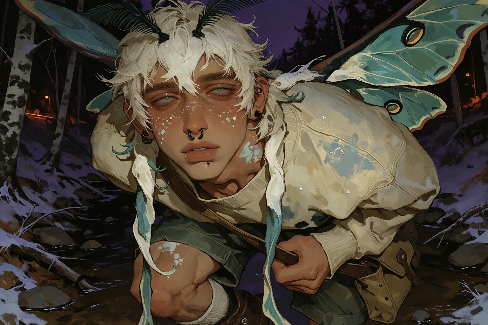
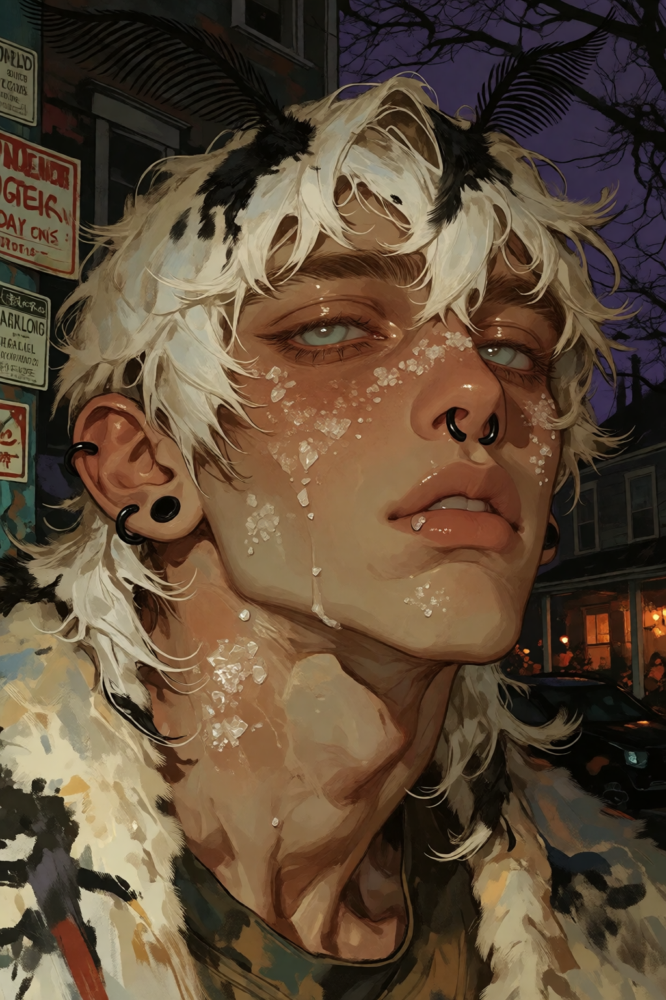
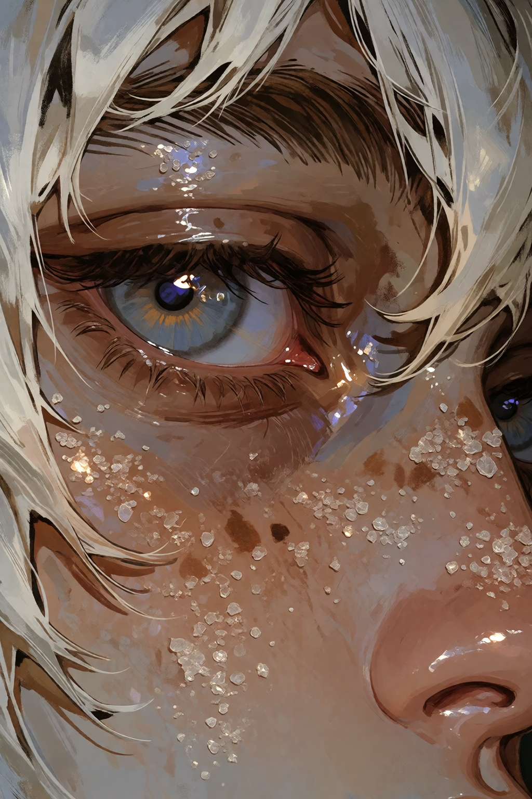
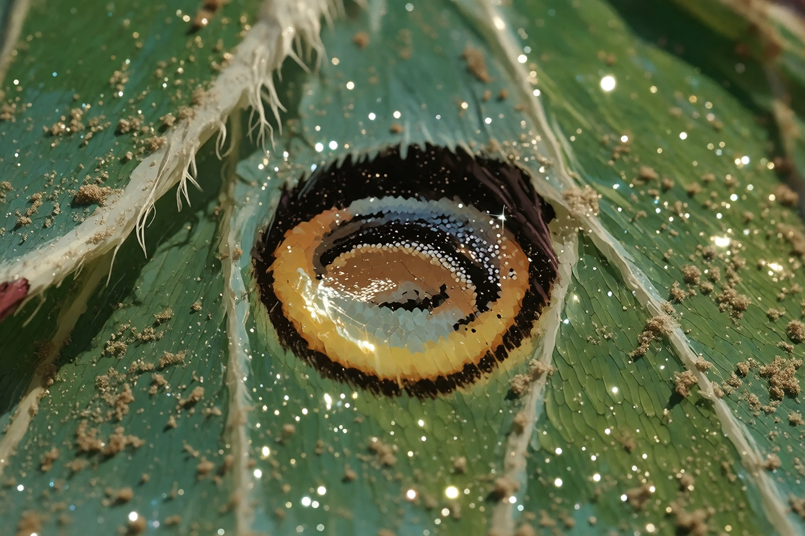
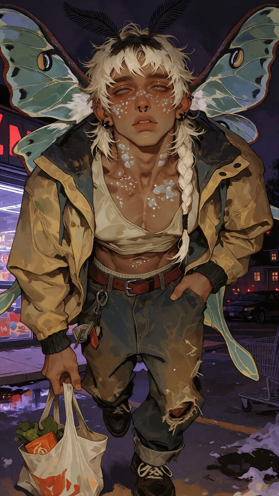
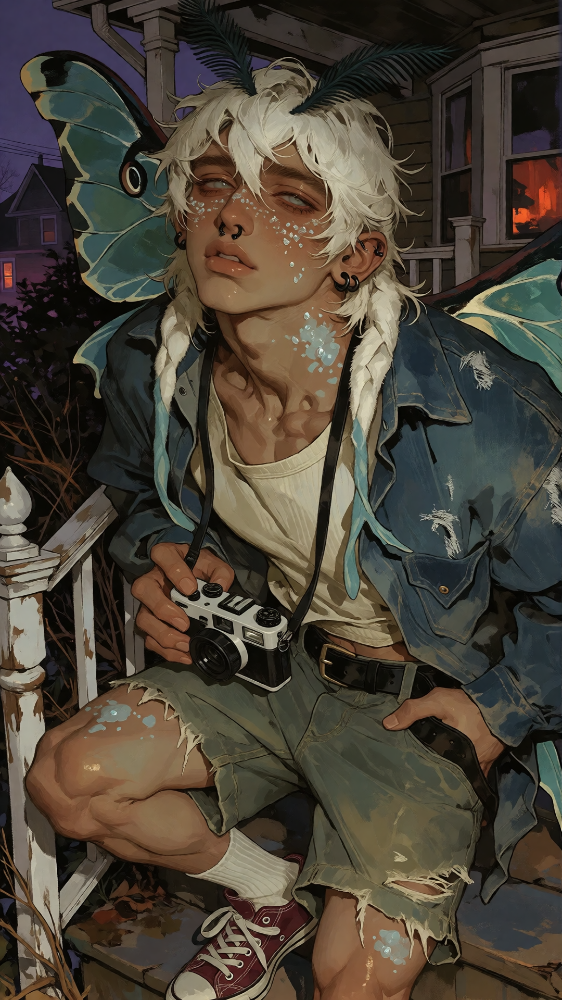
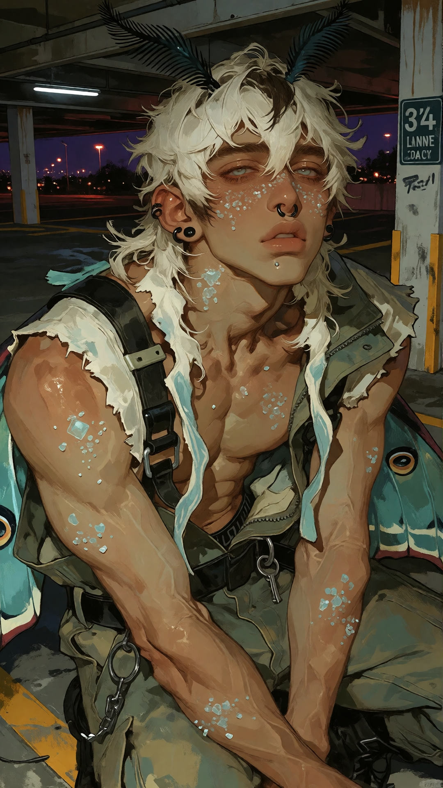
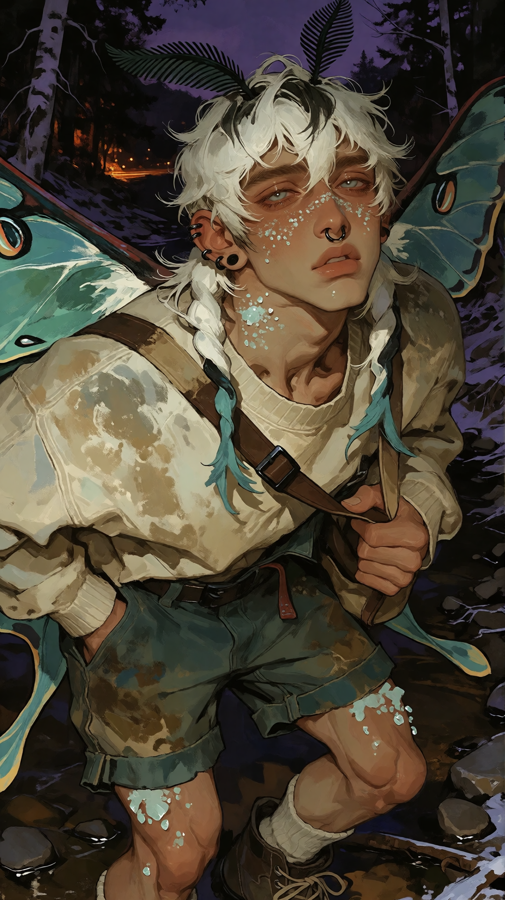

QUICK FACTS
- NAME
- Tansy
- SPECIES
- Moth demi-human
- GENDER
- RECORD PENDING
- AGE
- Mature adult, early 20s
- ORIGIN
- Hollows
- ROLE
- Outlier
- ARCHETYPE
- Afterimage / wreckage
AFTERIMAGE / WRECKAGE

He finds beauty in things that are fucked up.
FULL RECORD: IN PROGRESS
Tansy is a moth demi-human with warm, worn-looking skin, milk-blue irises, black pupils, and white sclera.
His eyes are heavy and droopy, with the tired, soft-lidded look that gives him a permanently half-awake expression.
His hair is white, fuzzy, and deliberately unkempt. It has no curl: the shape is reminiscent of Billy from Stranger Things, only fuzzier, with a small back-and-shoulder mini-mullet.
Approximately 5'4" with a compact, soft masculine build.
Luna moth wings.
Tansy has real, ordinary moth dust on him. The visual shorthand for it is “sugar,” but it is not sugar, scales, glitter, or anything supernatural. It is moth dust.
Normal black septum hoop.
The star clicker is not canon.
Tansy is a cryptid without being babyish. There is something wrecked and after-the-fact about him, but he is not designed around being grotesque or pathetic.
His central idea is finding beauty in things that are fucked up.
RECORD PENDING.
RECORD PENDING.
RECORD PENDING.
RECORD PENDING.
RECORD PENDING.
RECORD PENDING.
RECORD PENDING.
RECORD PENDING.
RECORD PENDING.
RECORD PENDING.
Romantic record currently incomplete. No assumptions made.
RECORD PENDING.
RECORD PENDING.
RECORD PENDING.
RECORD PENDING.
RECORD PENDING.
RECORD PENDING.
RECORD PENDING.
RECORD PENDING.
RECORD PENDING.
RECORD PENDING.
RECORD PENDING.
RECORD PENDING.
RECORD PENDING.
RECORD PENDING.
RECORD PENDING.
RECORD PENDING.
RECORD PENDING.
RECORD PENDING.
RECORD PENDING.
ADULT RECORD — INFORMATION NOT YET ENTERED.
RECORD PENDING.
RECORD PENDING.
RECORD PENDING.
RECORD PENDING.
RECORD PENDING.
RECORD PENDING.
RECORD PENDING.
RECORD PENDING.
RECORD PENDING.
RECORD PENDING.
RECORD PENDING.
Porch Light — “Upside” and “Recognize You.”
Like Roses — “Pretty Things.”
The Albatross / Foxing.
Taking Back Sunday.
Cryptid, but not babyish.
Afterimage / wreckage.
Tansy finds beauty in things that are fucked up.
RECORD PENDING.








Q: What's your name?
TANSY: “Tansy.”
Q: What are you?
TANSY: “A moth.”
Q: Where are you from?
TANSY: “The Hollows.”
Q: Are you an Outlier?
TANSY: “Yeah.”
Q: What kind of moth?
TANSY: “Luna.”
Q: What's that stuff on you?
TANSY: “Moth dust.”
Q: Is it sugar?
TANSY: “No.”
Q: What's the point of you?
TANSY: “RECORD PENDING.”
SOCIAL
THE OUTLIERS
Tansy is one of the Outliers, the loose wandering found-family crew with no permanent home.
FRIENDS
RECORD PENDING.
ENEMIES
RECORD PENDING.
REPUTATION
RECORD PENDING.
HOLLOWS
Tansy originates from the Hollows: old houses, overgrowth, fog, and the particular discomfort of feeling watched when there is nobody there.